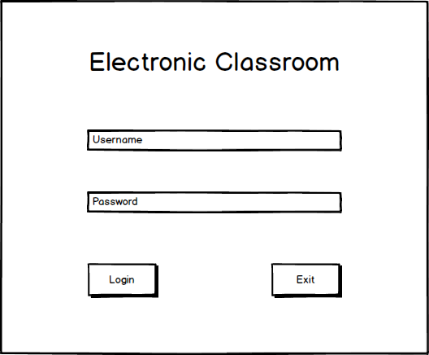
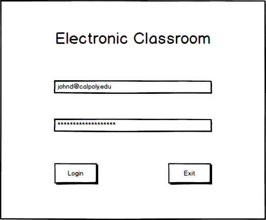
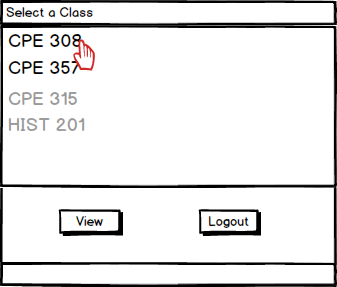
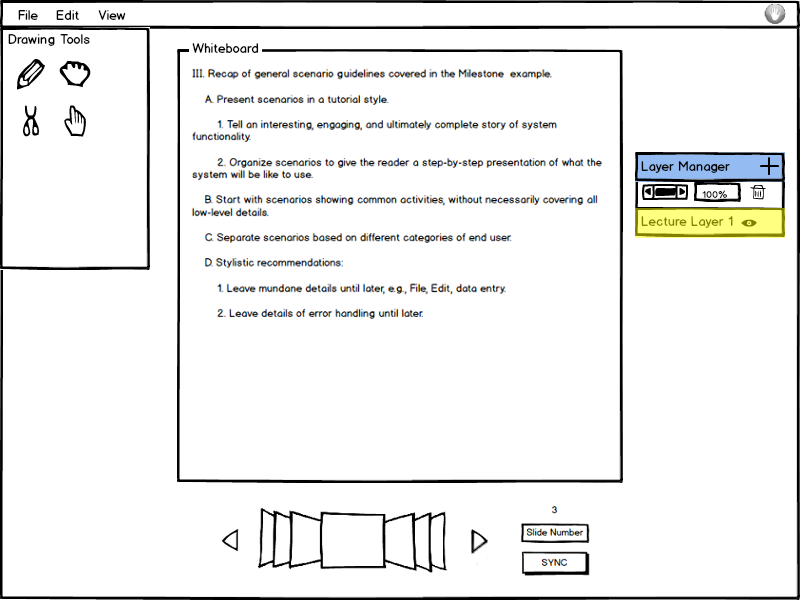

When a student first launches EClass, he/she is presented with a login screen. After a successful login, the student is prompted to select a class to join. Finally, the student enters the presentation.
Contents
The login screen is where a user can enter their username and password to access the classes that they are enrolled in.
Figure 1 below shows the initial login screen prompting for a studen'ts username and password.

Figure 1: Login screen with no information filled in.
A student can press the 'Login' button once the login information is entered. A student can also press the 'Exit' button to close the application.
Figure 2 below shows the login screen with a student's credentials filled in.

Figure 2: Login screen with credentials filled in.
After the student logs in, the EClass displays the classes the student is currently enrolled in, as shown in Figure 3.

Figure 3: Student's currently enrolled classes.
All of the student's current classes are shown, with a grey name indicating that the class does not have a live presentation associated with it. The student selects the class that he or she would like to view a presentation for and then clicks the 'View' button to view the presentation. If the student clicks the 'View' button with a non-active class (greyed out name), the EClass makes no change. Alternatively the student can click 'Logout' to return to the login screen depicted in Figure 1.
After the student has confirmed which class they wish to view, EClass transitions to the student view of the presentation. In this window students follow along as a presentation occurs, and they can take notes using the whiteboard. Here the student may open the forum from the menubar, open the approval tracker, and ask the presenter a question. This window is the central screen from the student's point of view.
Figure 4 depicts the student's view of the presentation window that shows when the student first enters the classroom. This window has differing initial content depending on the state of the presentation when the student enters. For instance, if the student joined late, the slide shown may be a slide other than the first slide.

Figure 4: Student's initial view of the presentation.
The initial slide shown when the student enters is the slide of the active presentation. If the presentation hasn't begun yet, the slide defaults to the first slide. In the above figure the student logged in and is presented at slide 3. This means that the student joined when the presentation was underway. To the left is the drawing tools, in the center is the white board, on the right is the layer manager, and down below is the navigation panel.